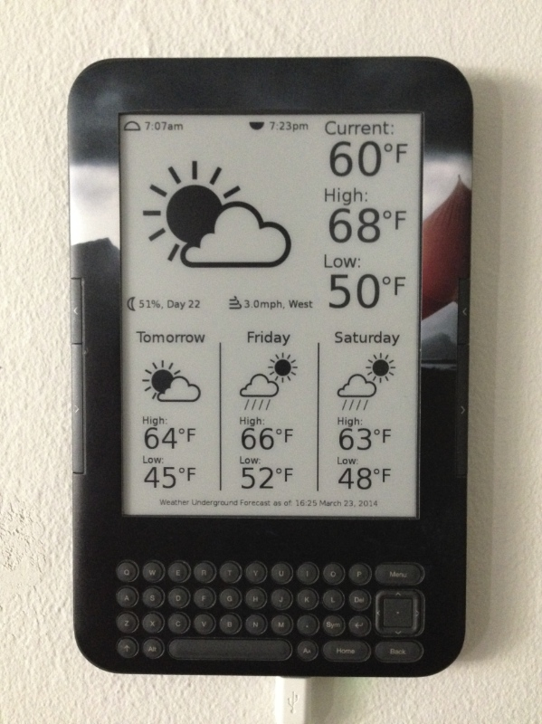

Based on Matt Petroff's work: http://www.mpetroff.net/archives/2012/09/14/kindle-weather-display/
Added Weather Underground support and display of current temperature, sunrise/set times, moon phase info, and wind speed/direction.
Weather Underground data requires an API key: http://www.wunderground.com/weather/api/
